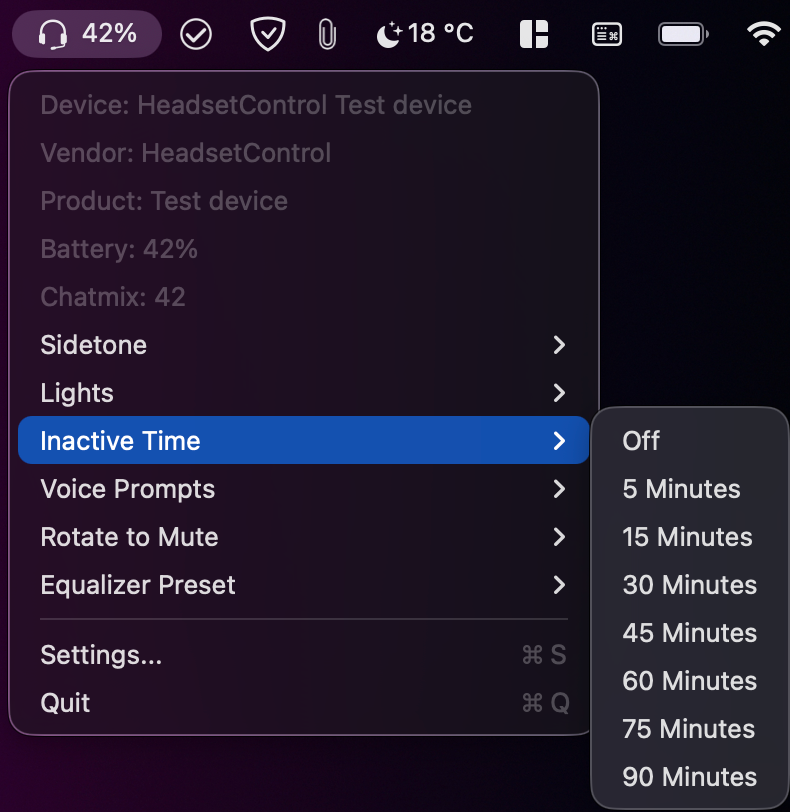
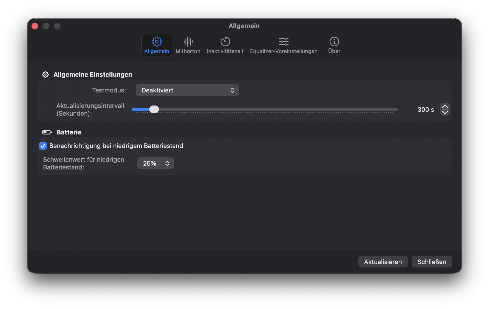

Know where you stand
Check available battery and chatmix readings from the status bar, with manual refresh when you want it.
See available battery and chatmix readings at a glance. Adjust the controls your headset supports, right from the menu bar.
Free and open source macOS 14 or later Apple Silicon and Intel

THE ESSENTIALS, WITHIN REACH
Everything important is close at hand, without keeping another app window open.
Check available battery and chatmix readings from the status bar, with manual refresh when you want it.
Supported options can include sidetone, lights, voice prompts, idle time, rotate to mute, and equalizer presets.
Set a low battery notification threshold and choose how often the app refreshes your headset status.
Controls vary by device. Check the HeadsetControl supported devices list for compatibility.
MADE TO FIT YOUR WORKFLOW
Use the settings window for update timing, low battery alerts, and control preferences. The menu bar stays ready for quick checks and changes.

GET STARTED
The app includes its native headset libraries. You do not need to install the separate HeadsetControl command line tool.
Use the cask for straightforward installs and updates.
brew tap ChrisLauinger77/cask
brew trust --cask chrislauinger77/cask/headsetcontrol-macostray
brew install --cask chrislauinger77/cask/headsetcontrol-macostrayTo update later: brew upgrade --cask headsetcontrol-macostray
Get the universal macOS app archive from GitHub Releases. It runs on Apple Silicon and Intel Macs.
View latest releaseThe app is ad-hoc signed and not notarized. On first launch, macOS may ask you to Control-click the app and choose Open. See first-launch steps.
OPEN SOURCE, OPEN TO IMPROVEMENT